reviewMatrix() draws an evidence / coding
matrix: one row per study, one column per criterion, and a tile
wherever a study addresses a criterion. The tile fill
encodes an optional per-study attribute (such as publication type) and
the letter inside each tile is that cell’s own value —
a coding level such as F/P/M.
Column headers can carry the number of studies addressing each
criterion. This article walks through every argument
of
reviewMatrix(data, cols, color_by = NULL, study_id = StudyID,
levels = NULL, colors = PALETTE, show_counts = TRUE,
base_size = 12, label_wrap = 20,
empty_fill = "#FCFCE6", tile_color = "white")Input shape
The input is wide: one row per study, a study-id
column, an optional grouping column for the fill, and one column per
criterion holding the cell code (or NA/""
where the study does not address that criterion). The bundled
studies data carries a block of methodological
reporting criteria coded exactly this way —
"F" full, "P" partial, "M" only
mentioned, NA not addressed — plus a PubType
column to colour by:
criteria <- c("Randomization", "Blinding", "SampleJustification",
"AttritionReported", "EthicsApproval", "Preregistration",
"EffectSize", "LimitationsDiscussed")
studies[1:6, c("StudyID", "PubType", "Randomization", "EthicsApproval")]
#> StudyID PubType Randomization EthicsApproval
#> 1 S01 Conference <NA> P
#> 2 S02 Journal <NA> F
#> 3 S03 Conference <NA> F
#> 4 S04 Conference <NA> <NA>
#> 5 S05 Journal <NA> <NA>
#> 6 S06 Conference P FTo keep the figures legible we plot a subset of studies; pass the full data frame to show them all.
sel <- studies[1:22, ]Default
Pass the data frame and the vector of criterion columns. Each coded
cell becomes a tile carrying its letter; blank cells stay empty. Here we
also colour by PubType and describe the level codes — the
two most common additions:
reviewMatrix(sel, criteria, color_by = "PubType",
levels = c(F = "Full", P = "Partial", M = "Mention"))
Randomization and blinding are trial-only items, so they are blank for the non-RCT studies — a faithful, if sparse, corner of the matrix.
cols: the criterion columns
cols is a character vector naming the columns to place
on the x-axis, in the order given. Pass a subset to focus on particular
criteria:
reviewMatrix(sel, c("EthicsApproval", "Preregistration", "EffectSize"),
color_by = "PubType")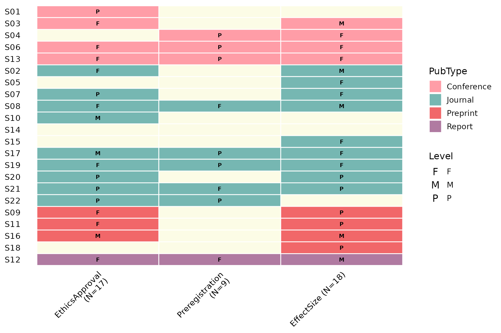
color_by: tile fill
color_by names a per-study column mapped to the tile
fill, and the studies are grouped by it so each category clusters
together. Omit it (the default NULL) to fill every tile
with a single colour:
reviewMatrix(sel, criteria)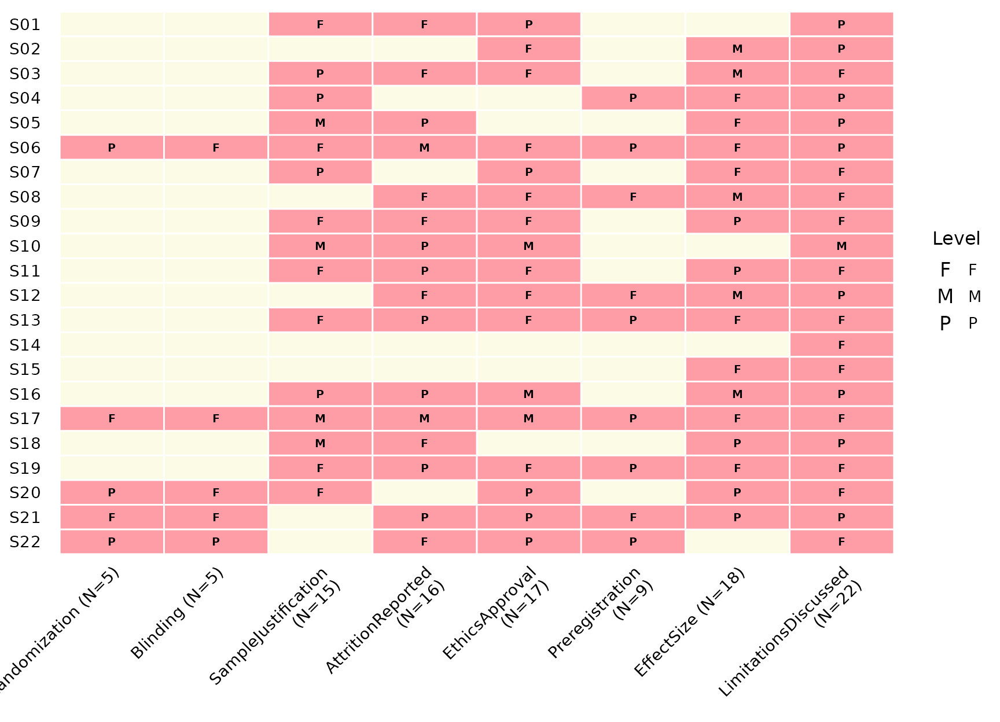
study_id: row labels
study_id selects the column shown on the y-axis (default
StudyID). Label with the author instead:
reviewMatrix(sel, criteria, color_by = "PubType", study_id = Author)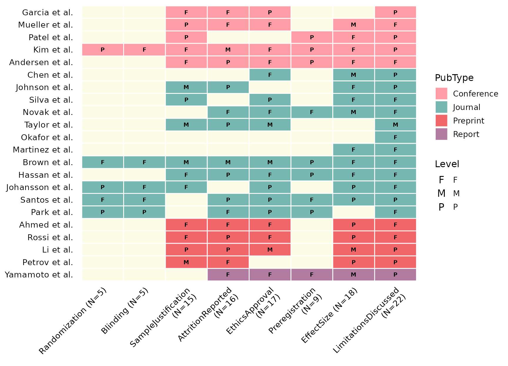
levels: the Level legend
levels is a named vector mapping each cell code to a
human-readable description. Its names also fix the legend order. Supply
it to add a labelled Level legend:
reviewMatrix(sel, criteria, color_by = "PubType",
levels = c(F = "Full", P = "Partial", M = "Mention"))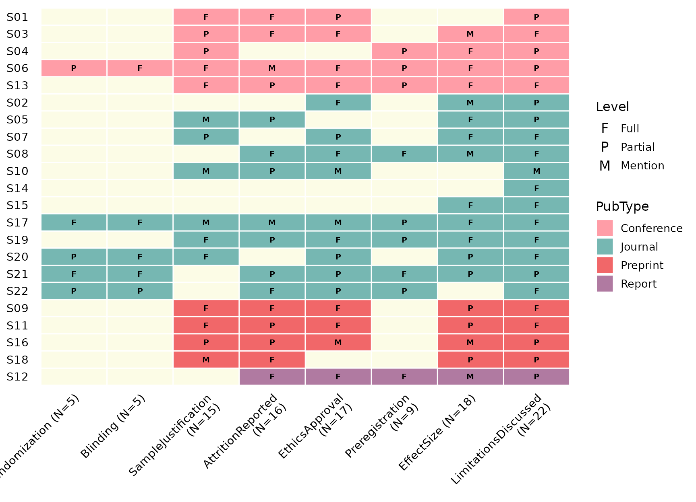
Leave it NULL and the legend falls back to the bare
codes found in the data.
colors: fill palette
colors supplies the fill colours for the
color_by categories (default PALETTE). A custom
vector is matched to the categories in order:
reviewMatrix(sel, criteria, color_by = "PubType",
colors = c("#e15759", "#4e79a7", "#59a14f", "#f28e2b"))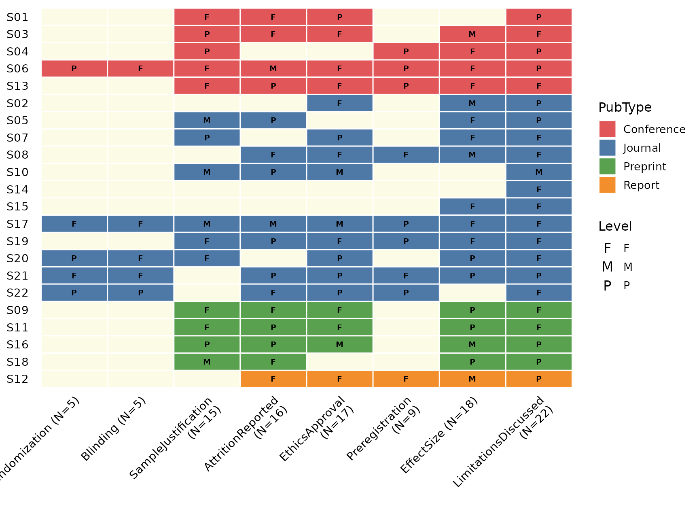
A named vector pins specific colours to specific categories:
reviewMatrix(sel, criteria, color_by = "PubType",
colors = c(Journal = "#4e79a7", Conference = "#e15759",
Preprint = "#b07aa1", Report = "#f28e2b"))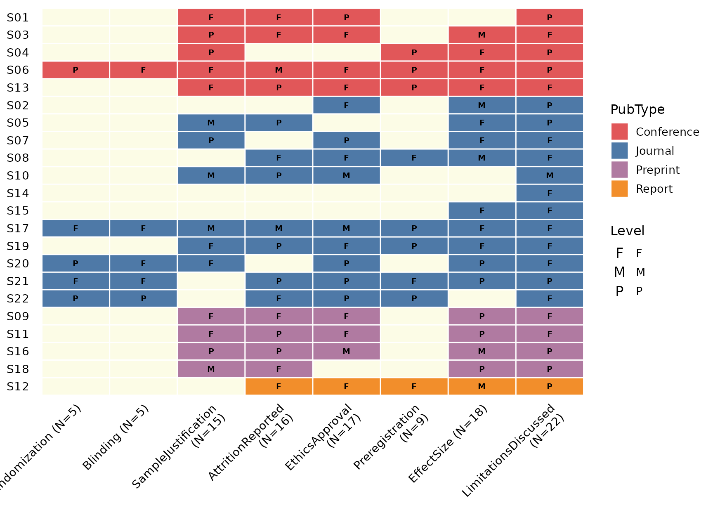
show_counts: counts in headers
By default each column header gains " (N=k)", where
k is the number of studies addressing that criterion. Turn
it off for bare names:
reviewMatrix(sel, criteria, color_by = "PubType", show_counts = FALSE)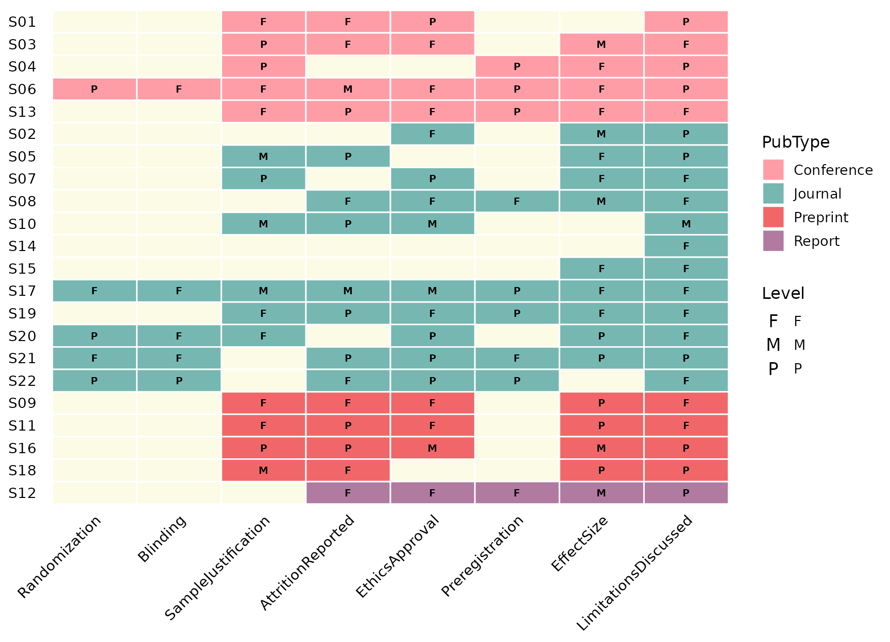
base_size: overall scaling
A single knob scales text and elements proportionally:
reviewMatrix(sel, criteria, color_by = "PubType", base_size = 16)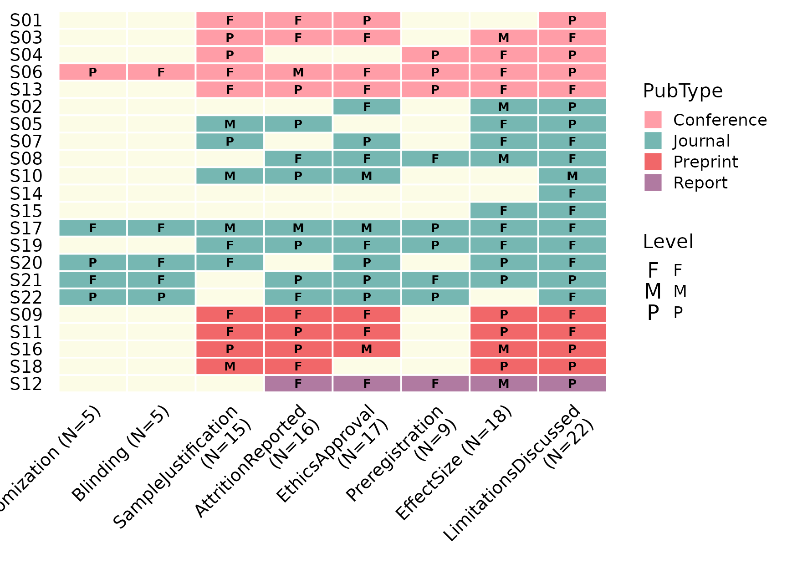
label_wrap: wrap long axis labels
Long criterion or study labels wrap onto multiple lines once they
exceed label_wrap characters (default 20).
Lower it to wrap sooner:
reviewMatrix(sel, criteria, color_by = "PubType", label_wrap = 8)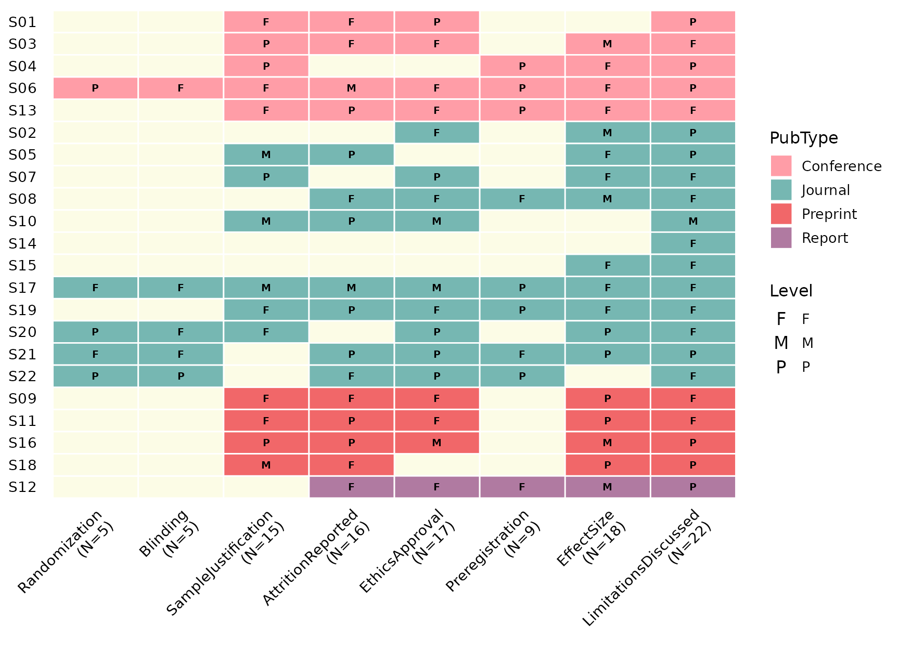
empty_fill and tile_color
empty_fill is the colour of the background grid behind
empty cells, and tile_color is the border drawn between
every tile. Together they control how strongly the matrix grid
reads:
reviewMatrix(sel, criteria, color_by = "PubType",
empty_fill = "grey95", tile_color = "grey80")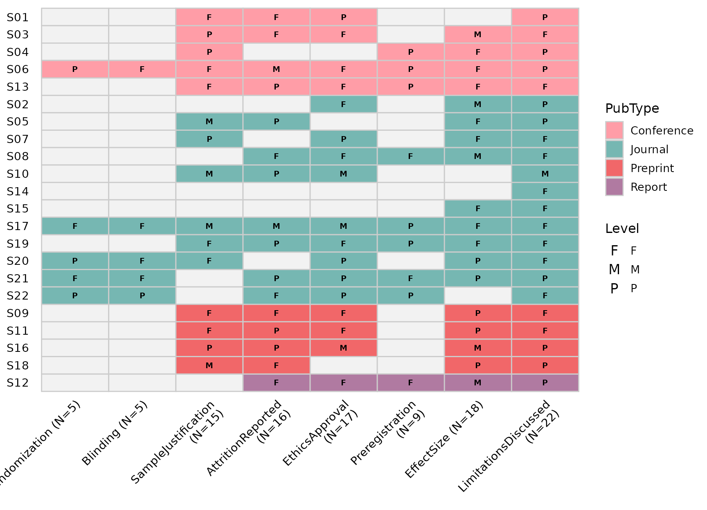
Composing with ggplot2
reviewMatrix() returns a plain ggplot, so you can keep
adding layers and labels with +:
reviewMatrix(sel, criteria, color_by = "PubType",
levels = c(F = "Full", P = "Partial", M = "Mention")) +
labs(title = "Reporting-criteria matrix",
subtitle = "How fully each study reports each item",
x = "Reporting criteria", y = "Study")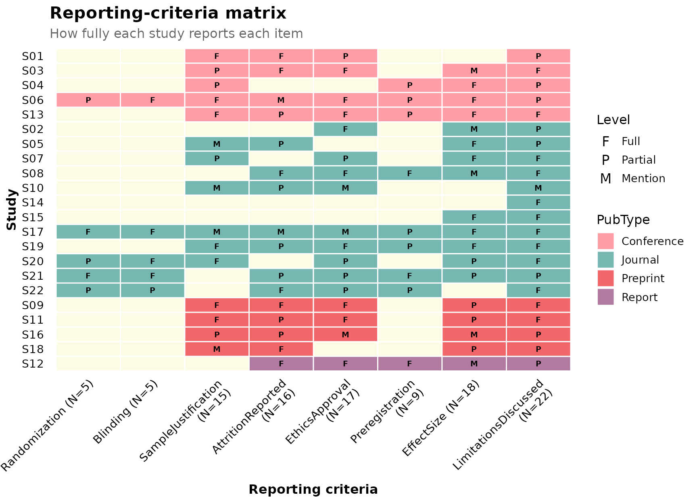